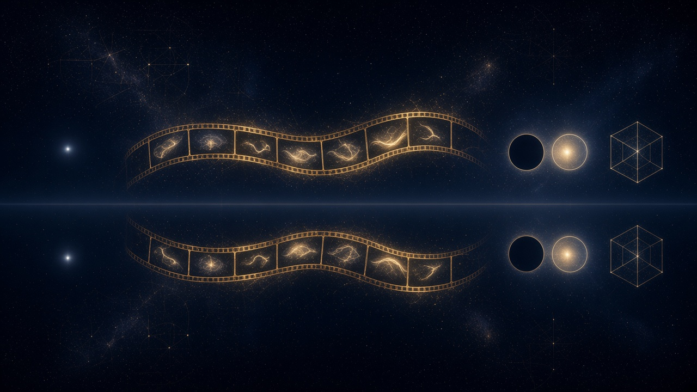

"E disse Deus: Haja luz; e houve luz. E viu Deus que era boa a luz; e fez Deus separação entre a luz e as trevas."
— Gênesis 1:3-4
A imagem que abre este capítulo é quase vazia. Um céu noturno, de um azul tão fundo que parece preto, ocupa tudo. No canto esquerdo, sozinho, brilha um único ponto de luz. Ao centro, uma fita de cinema dourada atravessa o escuro, ondulando como uma serpente. Cada quadro da fita guarda um traço luminoso, e cada traço é um pouco diferente do anterior. À direita, dois círculos lado a lado, um escuro e um claro. Depois deles, um cubo desenhado só pelas arestas, sem faces, como se fosse feito de puro contorno.
Uma linha reta corta a cena na horizontal. Abaixo dela, tudo se repete: o ponto, a fita, os círculos, o cubo, refletidos como numa água parada. Nos cantos, de novo, as linhas e os círculos quase apagados que acompanham este livro desde o primeiro banner. A geometria continua lá. Desta vez, ela vai ser lida.
O capítulo 1 terminou dizendo que a geometria do céu estava incompleta porque faltavam, em quem olhava, as letras para lê-la. O capítulo 2 percorreu as civilizações que tentaram escrever essas letras e mostrou que nenhuma fechou o livro. Os capítulos seguintes nomearam o preço dessa falta, a chave que permite abri-lo e o erro que o manteve fechado. Este é o capítulo das letras.
Chamo-o de conhecimento secreto, mas o segredo aqui não é de seita. Ninguém o esconde. Ele foi escrito em pedra no Egito, pintado no teto da Capela Sistina, desenhado no yin-yang, dito na primeira frase do Evangelho de João. É secreto do mesmo modo que a caveira de Holbein é secreta: está no centro da cena, e só aparece para quem muda o ângulo.
Michelangelo Buonarroti, Separação da luz e das trevas, 1512. Teto da Capela Sistina.
No teto da Capela Sistina, a poucos metros da Criação de Adão, há um painel menor, que quase ninguém fotografa. É a primeira cena da história que Michelangelo pintou ali, embora tenha sido uma das últimas a ficar pronta. Deus, envolto num manto rosado, torce o corpo no meio de um redemoinho de nuvens. Não há mundo ainda, nem terra, nem homem. Há apenas ele e um gesto: os dois braços erguidos, as mãos abertas, empurrando para lados opostos uma massa clara e uma massa escura. Em volta do painel, quatro jovens nus sentados sobre pedestais seguram guirlandas e medalhões de bronze, como espectadores de um acontecimento que ainda não tem nome.
O Gênesis conta que, antes de qualquer coisa, a terra era "sem forma e vazia", e havia trevas sobre a face do abismo. O primeiro ato do relato não é fazer um objeto. É separar. Deus diz "haja luz", e logo em seguida a narrativa insiste num detalhe: ele separou a luz das trevas. A criação começa por uma diferença.
Os capítulos anteriores trataram dessa cena como mito, metáfora ou herança. Aqui ela pode ser lida como um experimento.
Imagine um universo onde não há nada. Só um preto total, constante, sem bordas. Não há ninguém olhando, e não há nada a ser olhado.
Agora tente criar a primeira coisa desse universo. Se você colocar ali um ponto preto, nada acontece. Uma bola preta num fundo preto não se distingue do fundo. Para todos os efeitos, ela não existe. Pode ter massa, pode ter forma, pode ter o tamanho que for: se for igual ao que já há, não será percebida, e o que não pode ser percebido de nenhum modo não se distingue do que não é.
Coloque, então, um ponto branco.
Nesse instante surge alguma coisa. O ponto branco existe, e existe por causa do contraste com o preto. Ele não trouxe a existência consigo, como quem traz um objeto de fora. Ela apareceu na fronteira entre o branco e o preto, no lugar exato em que um deixa de ser o outro. É o ponto solitário do canto esquerdo do banner.
Desse experimento simples sai o princípio que organiza este capítulo inteiro: se tudo fosse, nada seria. Para que haja o ser, é preciso o não ser. Uma unanimidade absoluta jamais seria notada. Se o mundo inteiro estivesse sempre à mesma temperatura, ninguém teria inventado as palavras quente e frio. Só sabemos o que é a luz porque há sombra; só sabemos o que é o silêncio porque há som. O frio não é uma coisa que existe por si e, por acaso, tem um vizinho chamado calor. Os dois nascem juntos, como os dois lados de uma mesma linha.
O capítulo 2 mostrou que Saussure chegou a essa conclusão estudando a língua: um signo vale pela diferença em relação aos outros. A palavra "noite" significa alguma coisa porque existe "dia". O que este capítulo propõe é que Saussure descreveu na língua uma lei que vale para tudo. Nenhum ser define a si mesmo. Ele é definido pelo que não é. Todo significado é referencial, e toda qualidade é, no mínimo, binária.
A existência, portanto, não se enxerga com os olhos. Os olhos veem o branco e o preto. A diferença entre eles, aquilo que faz com que um seja e o outro não, só o intelecto apreende. É por isso que o capítulo 1 dizia que as estruturas que sustentam o mundo material só se percebem pela razão. A primeira delas é esta: o contraste.
Há ainda a linha horizontal do banner. Acima dela está a cena; abaixo, o reflexo. O ponto, a fita, os círculos e o cubo se repetem do outro lado da linha, um pouco mais escuros, mas com a mesma forma.
A Tábua de Esmeralda, que apareceu no capítulo 2, diz: "O que está embaixo é como o que está em cima, e o que está em cima é como o que está embaixo." Os herméticos chamaram isso de princípio da correspondência. Durante séculos ele foi lido como uma afirmação mística sobre astros e destinos. Lido com calma, diz uma coisa mais simples e mais forte: a mesma estrutura se repete em todas as escalas. O que vale para o átomo vale, de outro modo, para o planeta. O que vale para uma frase vale para uma vida.
Se a existência nasce do contraste, e se a estrutura se repete em todas as escalas, então a realidade inteira é dual. Não porque o mundo esteja dividido em dois reinos que brigam, como na guerra persa entre a verdade e a mentira, mas porque cada coisa que aparece aparece contra o seu oposto. E isso vale tanto para o que está em cima, o plano que não se vê, quanto para o que está embaixo, o plano em que vivemos.
Essas duas chaves, a dualidade e a correspondência, são o acesso. Com elas, o resto do capítulo pode ser lido.
O centro do banner é ocupado por uma fita de cinema.
Um filme, no cinema tradicional, é uma sequência de fotografias paradas. Vinte e quatro por segundo. Cada fotografia é um instante congelado: um braço numa posição, um rosto com uma expressão, uma porta num ângulo. Projetadas em sequência, essas fotos dão a ilusão de que algo se move. Mas, se você pegar a fita nas mãos e olhar cada quadro contra a luz, não encontrará o movimento em nenhum deles. Encontrará apenas estados.
O movimento não está nas fotos. Está entre elas, no intervalo que a fita não registra. É ali que o braço passa de uma posição a outra, que o rosto muda de expressão, que a porta gira. O que a câmera captura é o resultado do movimento, nunca o movimento em si.
O mundo funciona da mesma forma. Há o que está parado, o estado, que se vê, se mede, se fotografa. E há o que muda o estado, o movimento, que não tem cor, nem peso, nem forma, e que só se conhece por dedução, comparando um quadro com o seguinte. O capítulo 1 já tinha dado esse exemplo com uma bola: vemos a bola aqui e depois a bola ali, mas o movimento que a levou de um ponto a outro nenhum olho jamais viu.
Na linguagem deste livro, o estado é o objeto, e o movimento é o verbo. O objeto é o que é transformado. O verbo é o que transforma. O capítulo anterior mostrou o que acontece quando os dois são colados numa coisa só, como Aristóteles fez com a substância. Aqui eles aparecem separados, como na fita: os quadros de um lado, o intervalo invisível do outro.
E há entre eles uma diferença decisiva. Os quadros mudam o tempo todo; cada um é diferente do anterior. O que acontece entre eles, porém, segue sempre a mesma regra. Tudo muda, exceto a mudança. O estado é mutável e temporal. O movimento, enquanto regra, é constante.
Quem trabalha com telas sabe disso de um modo ainda mais literal. Num monitor, nada se move. Os pontos de luz que formam a imagem, os pixels, estão presos no mesmo lugar desde que a tela foi fabricada. Quando uma janela desliza pela área de trabalho, nenhum pixel viaja de um lado a outro. O que acontece é que, várias dezenas de vezes por segundo, um processamento recalcula a cor de cada ponto, e o resultado dá aos olhos a impressão de deslocamento. O movimento que vemos é uma sucessão de estados recomputados por uma regra. A regra não aparece na tela. Só aparecem os seus efeitos.

William Blake, Jerusalem: The Emanation of the Giant Albion, frontispício, 1804–1820.
William Blake abriu o seu livro mais longo com a imagem de um homem atravessando uma porta. É Los, a figura que, na mitologia de Blake, representa a imaginação criadora. Ele está de costas, com um chapéu de abas largas, a túnica agitada por um vento que vem de dentro. Com uma mão, toca o batente de pedra de um arco gótico. Com a outra, carrega um globo que irradia luz. À frente dele, o interior é escuro. Ele não sabe o que vai encontrar. Mas já está passando.
Nenhum objeto do cotidiano ensina tanto sobre a estrutura do real quanto uma porta.
Uma porta pode estar fechada. Depois, pode estar aberta. Entre um estado e outro há um verbo: abrir. São três elementos, e eles bastam para descrever o que aconteceu. Um estado inicial, um movimento, um estado final.
Se a porta estiver trancada, o verbo abrir se desdobra em verbos menores: pegar a chave, encaixá-la, girá-la, destrancar, segurar a maçaneta, girá-la, empurrar. Cada um desses verbos tem seu próprio estado inicial e seu próprio estado final. E cada um pode se desdobrar de novo: girar a chave é contrair músculos, aplicar força, vencer o atrito. O verbo é feito de verbos. Ele é fractal, como os desenhos que se repetem em escalas cada vez menores, e é por isso que a correspondência hermética se aplica a ele: o que vale no grande vale no pequeno.
O verbo abrir, porém, não fica preso à porta. Abre-se uma janela, uma carta, uma garrafa, um livro, uma conta no banco, um negócio, uma conversa. As coisas abertas não têm quase nada em comum. Uma é de madeira, outra de papel, outra de vidro, outra nem existe fisicamente. Mas a história é sempre a mesma: algo estava fechado, algo aconteceu, e agora está aberto. O verbo serve ao particular e ao geral ao mesmo tempo. Ele não pertence a nenhuma das coisas que abre.
Aristóteles deu nomes a dois aspectos dessa cena. Chamou de ato o que uma coisa é agora, e de potência o que ela pode vir a ser. A porta fechada está em ato fechada e em potência aberta. Neste livro, os dois nomes são conservados, mas mudam de lugar. O ato é a fotografia do momento, o estado atual. A potência é o conjunto dos verbos que podem agir sobre esse estado. A potência não mora dentro da porta. Mora na história em que a porta pode entrar.
Los, no frontispício de Blake, é isto: alguém no meio de um verbo. Não está do lado de fora nem do lado de dentro. Está atravessando.
Para que o mesmo verbo sirva a uma porta e a uma garrafa, ele precisa de lugares onde as coisas possam se encaixar.
Pense no verbo cair. Uma laranja cai do galho. Um skate cai da escada. Um copo cai da mesa. Um homem cai na rua. O verbo é o mesmo, e para ele tanto faz quem cai. O que ele exige é pouco: que haja algo com massa, que esse algo esteja no alto e que nada o sustente. Quem cumprir esses critérios pode cair. O verbo cria, por assim dizer, um espaço vazio com o formato desses critérios, e qualquer coisa que tenha esse formato pode ocupá-lo.
O capítulo 4 deu a esses dois polos os nomes que acompanham o livro desde o início. O espaço vazio, com seus critérios, é o abstrato. O que o preenche, a laranja, o skate, o homem, é o sólido. O abstrato é o molde; o sólido é o componente.
Na fita do banner, é como se em cada quadro houvesse um recorte, uma silhueta vazia, e o filme pudesse ser rodado de novo com outros atores, desde que cada um coubesse no recorte. É exatamente o que acontece com as histórias. Romeu e Julieta já foram representados por milhares de atores em centenas de línguas. Os corpos mudaram; os espaços na história, não.
Isso permite reler, com mais precisão, a velha dupla de Aristóteles: forma e matéria. A forma é o espaço que a matéria preenche. A matéria é o componente que se encaixa no espaço. Aristóteles tinha os dois termos certos. O erro esteve em fundi-los numa coisa só, como se a forma de mesa morasse dentro de cada mesa. A forma mora na história. É a história que tem lugar para uma mesa.
Daí sai uma consequência que todo mundo já viveu sem perceber. A utilidade de uma coisa não está nela. Um cabo de vassoura é cabo de vassoura enquanto está na história de varrer. Na mão de uma criança, vira espada. Na mão de um idoso, bengala. Embaixo de uma pedra, alavanca. A madeira continua igual. O que mudou foi a história em que ela entrou e o espaço que passou a ocupar. Quando dizemos que um objeto "serve para" alguma coisa, estamos falando, sem saber, de um verbo.

Wassily Kandinsky, Composition VII, 1913. Galeria Tretyakov, Moscou.
Em 1913, Wassily Kandinsky pintou uma tela de dois metros por três em que não há nenhum objeto reconhecível. Há manchas de azul profundo, arcos negros, triângulos amarelos, rasgos de vermelho, linhas que cruzam a superfície como cordas de um instrumento. Os estudiosos encontraram ali restos de temas antigos, um dilúvio, uma ressurreição, um juízo final, mas eles foram dissolvidos até sobrar só o movimento. Kandinsky, que escreveu um livro chamado Do Espiritual na Arte, comparava a pintura à música. Uma melodia não representa nada do mundo físico, e no entanto todos sabem quando ela é triste ou alegre.
A Composition VII é o que sobra de uma história quando se tiram os sólidos. Não há casas nem pessoas. Há direção, tensão, choque, repouso. É uma pintura de verbos.
Quando todos os espaços de um verbo estão preenchidos, algo acontece.
Há uma laranja, ela está no alto, nada a sustenta. O verbo cair tem tudo o que precisa. Então ele ocorre, e, ao ocorrer, desaparece. O que fica é um novo estado: a laranja no chão. O movimento colapsou numa fotografia. Esse novo estado é um novo ato, com novas potências: a laranja no chão pode apodrecer, ser comida, ser chutada, germinar. E esse estado, por sua vez, vira o objeto do próximo verbo.
É assim que os quadros se encadeiam na fita. Uma foto, um verbo, outra foto, outro verbo. A ordem das fotos não é arbitrária: é ditada pelos verbos que podem agir sobre cada estado. Um computador faz isso o tempo todo. Dado um estado, aplica uma regra, produz o estado seguinte, aplica a regra seguinte. Turing descreveu essa máquina em 1936. Ela não precisa de nada além de estados e de regras para passar de um a outro.
Visto desse modo, todo estado é uma história condensada. A laranja no chão carrega, sem mostrar, a queda que a pôs ali, o galho onde cresceu, a árvore, a semente, a chuva. Uma ruína é a história de um prédio. Um rosto de setenta anos é a história de uma vida. O que chamamos de coisa é um verbo que já aconteceu.
E as histórias se repetem. Outras laranjas cairão de outros galhos. Outros homens repetirão os mesmos amores, as mesmas brigas, as mesmas perdas, com outros nomes. O capítulo 3 chamou esse giro de inferno cíclico quando ele é vivido sem consciência. Aqui ele aparece pelo outro lado: é a prova de que a história, e não a coisa, é o que permanece.
Durante dois mil e quinhentos anos, a filosofia procurou o tijolo do mundo. Tales disse que era a água. Os atomistas disseram que eram partículas indivisíveis. Aristóteles disse que era a substância. A física moderna desceu do átomo às partículas subatômicas e continua descendo.
A tese deste livro é que o tijolo procurado não é uma coisa. A menor unidade da realidade é a história.
Uma história, no sentido em que a palavra é usada aqui, é a menor sequência que ainda faz sentido: um estado inicial, um movimento e um estado final. Fechado, abrir, aberto. Zero, um. No alto, cair, no chão. Uma fotografia sozinha não é uma história, porque não diz de onde veio nem para onde vai. Um verbo sozinho também não, porque não tem sobre o que agir. É preciso os três.
Leibniz, que o capítulo 2 deixou maravilhado diante dos hexagramas do I Ching, chamou de mônadas as unidades últimas do real. O nome serve aqui, com outro conteúdo. A mônada deste livro é a história mínima: um estado, um movimento, outro estado. E ela tem sempre um par. Se há o movimento que leva do zero ao um, há o movimento que leva do um ao zero. Se há abrir, há fechar. Toda história mínima traz consigo a sua antagônica.
Vale aqui uma distinção que a língua portuguesa ainda guarda. Durante muito tempo se escreveu estória para as narrativas e história para os acontecimentos. Usarei as duas palavras num sentido próximo. A estória é o padrão: a forma de "alguém abre algo", que vale para todas as portas e todas as garrafas. A história é a instância: esta porta, aberta por esta mão, nesta tarde. A estória é eterna; cada história, quando acontece, é única e passa.
Esse é o sentido do título do livro. O padrão permanece enquanto as instâncias se sucedem. O que é eterno não é imóvel, porque é justamente uma regra de mudança. O que é mutável não é caos, porque cada mudança obedece a um padrão. Eternos mutáveis.

Hilma af Klint, The Ten Largest, nº 9, Old Age, 1907. Fundação Hilma af Klint, Estocolmo.
Em 1907, uma pintora sueca chamada Hilma af Klint pintou dez telas enormes, de mais de três metros de altura, sobre as idades da vida humana. Ela participava de um pequeno grupo de mulheres que se reunia para meditar e estudar ensinamentos espirituais, e dizia que as pinturas lhe eram ditadas por forças que não sabia nomear. Pediu que não fossem mostradas por vinte anos depois da sua morte. Durante décadas, quase ninguém soube que, antes de Kandinsky, alguém já tinha pintado o invisível por meio de formas puras.
A nona tela, Velhice, é dividida ao meio por uma linha vertical quase imperceptível. Os dois lados são quase iguais e nunca idênticos. No alto, duas grandes rosáceas de pétalas desenhadas a traço, uma com a borda amarela, a outra com a borda azul. Abaixo, em cada metade, dois círculos brancos que se sobrepõem e formam, no encontro, uma amêndoa. Mais abaixo, uma forma oval partida em duas. Embaixo de tudo, no fundo rosado e avermelhado, pequenos olhos e espirais com pontos de cor. Tudo vem aos pares. Tudo se espelha sem se repetir.
É uma boa imagem para o que vem a seguir. Se a existência nasce do contraste, então o modo de ler qualquer coisa é encontrar o par a que ela pertence. Os pares são as letras deste alfabeto.
O primeiro e mais importante é o que já apareceu na fita: movimento e estado. O movimento é constante, o estado é transitório. Desse par nascem quase todos os outros, como variações da mesma letra.
Ser e devir. O ser é o que é e não pode deixar de ser; o devir é o que vem a ser e pode deixar de vir. Parmênides viu o primeiro, Heráclito o segundo, e o capítulo 2 terminou dizendo que os dois enxergavam partes da mesma coisa. Nesta leitura, o ser é o próprio movimento imutável, a regra, e o devir é o transitório, o estado que a regra produz.
A língua portuguesa tem uma vantagem que quase nenhuma outra tem: separa ser de estar. A porta é uma porta; ela está aberta. O ser não se cria nem se destrói; o estar começa e termina. Quem fala português carrega no próprio verbo uma lição de metafísica que os filósofos de outras línguas precisaram de tratados para formular.
Eterno e temporal. O eterno é perfeito no sentido mais literal da palavra, per-feito, acabado: não lhe falta nada, por isso não precisa mudar. O temporal é imperfeito porque está sempre a caminho de outro estado.
Ato e potência, já vistos na porta. Verbo e objeto, que o capítulo anterior separou. Abstrato e sólido, forma e matéria, espaço e componente, que este capítulo acabou de redefinir. Metafísico e físico, espírito e corpo, que são o mesmo par dito pela filosofia e pela religião: o que move e o que é movido.
Critério e qualidade. Um critério é uma pergunta que a história faz: tem massa? está no alto? Uma qualidade é a resposta de um elemento: tem, está. Toda qualidade pertence a um critério, todo critério pertence a uma história, e um elemento só pode ter uma qualidade por critério. A porta não pode estar aberta e fechada ao mesmo tempo, sob o mesmo critério.
Isomórfico e polimórfico. O espaço que o verbo cria tem uma só forma: é isomórfico. As coisas que podem ocupá-lo são muitas e variadas: são polimórficas. Os programadores usam a palavra polimorfismo para dizer que muitos objetos diferentes respondem à mesma chamada. Costumam atribuir essa virtude aos objetos. Mas quem é polimórfica é a história, que aceita muitos atores no mesmo papel.
Causa e efeito, geral e particular, padrão e manifestação, ordem e caos, perfeito e imperfeito, eternidade e tempo. Cada um desses pares coloca de um lado o que permanece e do outro o que passa.
Há também os pares que o hermetismo chamou de gênero. O Caibalion diz que tudo tem um princípio masculino e um feminino. Lido com as letras deste capítulo, o princípio masculino é o sólido, o componente que preenche; o feminino é o abstrato, o espaço que recebe. Nenhum dos dois gera nada sozinho. Da união dos dois nascem as histórias. A Sophia dos gnósticos, que no capítulo 2 quis gerar sem o seu par e produziu um ser defeituoso, é uma lembrança antiga dessa regra.
E há os pares que vieram do meu ofício e que, para minha surpresa, diziam a mesma coisa. Imperativo e declarativo: no estilo imperativo, quem programa diz passo a passo o que cada coisa deve fazer, e o controle está no sujeito; no declarativo, define-se apenas o que deve acontecer e quais espaços existem, e o controle se inverte, passa para a regra. Acoplamento e coesão: o acoplamento prende partes que deveriam ser independentes; a coesão reúne o que pertence à mesma história. Com estado e sem estado, que os programadores chamam de stateful e stateless. Entrada e saída. Público e privado. A engenharia de software, sem saber, passou décadas redescobrindo o alfabeto da dualidade com nomes técnicos.
Por fim, os pares que não cabem na divisão entre o que permanece e o que passa, mas que obedecem à mesma lei do contraste: presença e ausência, luz e sombra, ligado e desligado, significante e significado, bem e mal, alívio e dor, desejo e tédio, princípio e fim. Nenhum deles faz sentido sozinho.
Dois pares merecem uma linha a mais, porque são os instrumentos de quem quer usar o alfabeto. Dedução e indução. A dedução parte do geral para o particular e pergunta: quais elementos podem preencher esta história? A indução parte do particular para o geral e pergunta: em quais histórias este elemento pode entrar? Diante de qualquer situação da vida, essas duas perguntas bastam para começar a ler.
Quem estudou religiões talvez estranhe que tudo aqui venha em pares, quando tantas tradições preferem o três: Pai, Filho e Espírito Santo; Brahma, Vishnu e Shiva; corpo, alma e espírito; tese, antítese e síntese.
Olhadas de perto, muitas dessas trindades são dois polos e a relação entre eles. A própria mônada deste capítulo tem três elementos, estado inicial, movimento e estado final, e no entanto só tem duas naturezas: o estado, que aparece duas vezes, e o movimento, que os liga. Tese e antítese são um par; a síntese é o novo estado que nasce quando o verbo entre elas colapsa. Criar, conservar e destruir são o movimento visto em três momentos.
O três é a forma como a dualidade se apresenta quando está em movimento. Mas, quando se toma o três como fundamento, a dualidade fica escondida atrás dele, como atrás de uma cortina. Não digo isso para diminuir nenhuma fé. Digo para que o crente encontre, por trás da imagem que recebeu, a estrutura que ela guarda.
O capítulo anterior deixou um enigma em aberto. Plutarco conta que os atenienses conservaram por séculos o navio em que Teseu voltou de Creta. À medida que as tábuas apodreciam, eram trocadas por tábuas novas. Chegou um dia em que nenhuma tábua original restava. Os filósofos discutiam: aquele ainda era o navio de Teseu?
Para quem acredita que a identidade mora na matéria, o enigma não tem saída. Se o navio é a madeira, ele deixou de existir em algum momento impossível de localizar. Se não é a madeira, o que ele é?
Com as letras deste capítulo, a resposta é simples. O navio de Teseu nunca foi as tábuas. É um espaço numa história: a embarcação que levou Teseu e os jovens atenienses de volta, conservada pela cidade como memória. Enquanto houver algo preenchendo esse espaço, o navio é o mesmo. As tábuas são sólidos que ocupam o lugar por um tempo; o lugar permanece. Tudo muda, exceto o espaço que a história abriu.
Uma melodia funciona do mesmo modo. A mesma canção pode ser tocada num piano, num violino, assobiada por alguém na rua, e todos a reconhecem. Ela não está em nenhum dos instrumentos. Tem uma identidade que atravessa o tempo, independente do material que a faz soar.
Com as pessoas não é diferente. As células do corpo humano se renovam em ritmos diferentes ao longo da vida, e o corpo de um homem de quarenta anos é feito de matéria que, em grande parte, não estava nele aos dez. Se a identidade estivesse na matéria, ele seria outro. A identidade está no lugar que ele ocupa nas histórias que vive.
Se as formas são os espaços abertos pelos verbos, e os verbos, como regra, são eternos, então as formas também são. Elas não foram criadas e não podem ser destruídas.
A forma do círculo não nasceu no dia em que alguém desenhou o primeiro círculo na areia, nem vai morrer no dia em que o último for apagado. A forma de "abrir" estava disponível antes da primeira porta. Os sólidos que preenchem as formas começam e acabam; as formas sempre estiveram lá.
Daqui sai uma afirmação que pode soar estranha a quem cresceu ouvindo o Gênesis como crônica: no sentido mais profundo, não houve criação. Nada do que é eterno foi inventado a partir do zero. O universo já nasceu pronto, no sentido de que todas as formas e todas as regras que o governam já estavam dadas. O que se produz continuamente são os estados, as manifestações, os quadros da fita. Há o princípio, há o movimento e há a matéria. A "criação" do primeiro capítulo do Gênesis é a narração desse movimento, e não por acaso começa com uma separação, e não com a fabricação de um objeto.
Essas formas eternas são o que Jung chamou de arquétipos. O capítulo 2 terminou com ele mostrando que os mesmos símbolos aparecem em povos que nunca se tocaram: o círculo, a serpente, a árvore, o par de opostos, o velho sábio, a mãe. Jung os situou no inconsciente coletivo. A leitura deste livro dá um passo além: eles se repetem porque são as formas das histórias que todos os homens vivem. Cada cultura preencheu os mesmos espaços com os seus próprios sólidos, seus deuses, seus animais, suas cores. Os espaços eram os mesmos.
A matéria, por sua vez, não tem fundo nem teto. Para baixo, ela se divide em moléculas, átomos, partículas, e a física ainda não encontrou o fim dessa descida. Para cima, se agrupa em planetas, estrelas, galáxias, aglomerados, e também não se encontrou o fim. O que tem fim não é a matéria no espaço. É cada estado dela no tempo: cada arranjo começa e termina, cada quadro dá lugar ao seguinte.

Robert Fludd, Integrae Naturae Speculum Artisque Imago, gravura de Utriusque cosmi historia, 1617.
Na mesma obra em que desenhou o homem inscrito no universo, Robert Fludd fez uma gravura ainda mais ambiciosa: um espelho de toda a natureza. Círculos concêntricos ocupam a página inteira. Na borda, entre chamas, os coros de anjos. Depois, as esferas das estrelas e dos planetas, do Saturno à Lua. Mais para dentro, os elementos, o fogo, o ar, a água e a terra. Depois, os animais, as plantas, os minerais. E, num anel interno, as artes humanas: a agricultura, a medicina, a astronomia, a pintura.
No centro, de pé sobre a Terra, há uma mulher nua, coroada de estrelas, com uma lua sobre o ventre. É a Natureza. Do seu pulso direito sobe uma corrente que vai até o alto da página, onde uma mão sai de uma nuvem com o nome de Deus escrito em hebraico e a segura. Do seu pulso esquerdo desce outra corrente, até um macaco sentado sobre o globo, que segura um compasso e mede alguma coisa. O macaco é a arte humana, que imita a natureza como um macaco imita um homem.
É uma cadeia contínua. Do alto ao baixo, de Deus à natureza, da natureza ao homem que a imita, nenhum elo está solto. Cada esfera recebe a ordem da esfera de cima e a transmite à de baixo. A mesma ordem governa tudo.
Fludd desenhou numa página o que Heráclito chamou de Logos. Agora é possível dizer com precisão o que essa palavra significa.
Os verbos não agem isolados. Cair só acontece depois de algo ter subido; abrir só acontece sobre o que está fechado. Há verbos que podem vir depois de outros e verbos que não podem. Há entre eles relações de compatibilidade, uma ordem. A essa ordem entre os verbos este livro chama de Logos. É o roteiro de todos os roteiros, o plano das mudanças.
A partir daí, várias palavras que o leitor carrega desde o capítulo 1 ganham definição. A metafísica é o estudo desse plano. A linguagem é a descrição desse plano: toda frase relata uma mudança de estado ou um estado produzido por uma mudança. A programação é a construção de máquinas que executam trechos desse plano. A matemática é a sua forma mais pura, sem nenhum sólido. A consciência é o lugar onde o plano se reconhece. E como todos descrevem a mesma ordem, têm a mesma forma: são isomórficos. Linguagem, metafísica, programação, matemática, consciência e Logos são o mesmo desenho visto de lugares diferentes.
Por isso a linguagem é o limite da consciência. Wittgenstein disse que os limites da minha linguagem são os limites do meu mundo. Na leitura deste livro, a frase vale literalmente. Quem não tem palavras para o verbo só enxerga objetos. Quem não tem a letra do abstrato só enxerga sólidos. Alfabetizar-se espiritualmente é ganhar palavras para o que já estava diante dos olhos.
E o macaco de Fludd, com o seu compasso, é o programador. Ele imita a natureza. Se a imita bem, isto é, se copia a ordem dos verbos e não apenas a aparência dos objetos, o que ele constrói funciona e dura. Se copia só os objetos, constrói como Aristóteles pensou: coisas cheias de comportamento colado, que quebram quando o mundo muda.
O universo inteiro, visto assim, é um grande autômato. Dado um estado, um movimento; dado o movimento, um novo estado. As regras são imutáveis, os estados não param de mudar.
O capítulo 2 citou a primeira frase do Evangelho de João: "No princípio era o Verbo, e o Verbo estava com Deus, e o Verbo era Deus." E lembrou que, em grego, a palavra é Logos, a mesma de Heráclito. Tudo o que este capítulo construiu até aqui converge para essa frase.
Durante séculos, Deus foi imaginado como um ente: um ser enorme, separado do mundo, que fabricou o mundo de fora como um relojoeiro fabrica um relógio. Essa imagem tem um problema que toda criança encontra cedo. Se Deus é um ente que criou as coisas, quem criou Deus? E quem criou quem criou Deus? A pergunta não tem fim, e o homem inteligente que o capítulo 2 deixou diante do senhor de barba nas nuvens desiste dela.
Mas a pergunta só existe porque Deus foi pensado como um objeto, um sólido muito grande. Se Deus é o Verbo, a pergunta se desfaz. O Verbo não é uma coisa entre as coisas. É a ordem pela qual todas as coisas mudam. É a causa primeira, o que foi, o que é e o que sempre será. É o ser no sentido que este capítulo deu à palavra: o movimento imutável, a regra de todas as mudanças. Está presente em todas as histórias, porque todas as histórias são feitas dele.
Isso explica também por que, no Êxodo, Deus responde a Moisés com um verbo, "Eu sou o que sou", e não com um substantivo. E explica por que é quase um equívoco dizer que Deus existe. Existir, como mostrou o experimento do ponto branco, é aparecer contra um fundo, ter contorno, ser um ponto distinto de outro. Deus não é um ponto no fundo preto. É aquilo pelo qual há pontos e fundo. Deus não existe ao modo das coisas. Deus é.
E o homem também é verbo. O corpo é sólido, o rosto envelhece, as células se trocam. Mas aquilo que, em cada um, age, escolhe, compreende e se lembra é da natureza do movimento. Por isso a Bíblia diz que o homem foi feito à imagem de Deus. Não à imagem de um corpo, mas à imagem de um agente. Somos dotados de ação e temos, como o Verbo, uma ordem própria. A ignorância descrita no capítulo 3 é justamente essa ordem deturpada: um verbo que se toma por objeto.
O tempo, nesse quadro, também ganha definição. O tempo não é uma coisa que passa. É o nome que damos à mudança de estado. Onde nada mudasse, não haveria tempo. Cada quadro da fita é um instante; a sequência dos quadros é o tempo; o que leva de um quadro ao outro está fora do tempo, porque é a sua causa.

William Blake, Jerusalem, prancha 81, 1804–1820.
Numa das pranchas de Jerusalem, Blake pintou um grupo de figuras nuas diante de uma gruta. Uma mulher, de costas, aponta para uma nuvem clara onde está escrito, em letras invertidas, como se fossem lidas num espelho, que no céu a única arte de viver é esquecer e perdoar. Ao lado dela, um homem leva a mão ao peito. À direita, outras mulheres se enlaçam numa coluna de corpos que sobe. Na margem de baixo, Blake escreveu uma linha em letra direita: "No céu, o amor gera amor; mas o medo é o pai do amor terreno."
A escrita espelhada é um detalhe que passa fácil. As palavras sobre o céu estão invertidas, como o reflexo do banner deste capítulo. Para lê-las, é preciso inverter o próprio olhar.
Se o espírito é da natureza do verbo, ele não pode ser criado nem destruído. É eterno, e não tem a opção de deixar de ser. O corpo, por sua vez, está em constante transformação, como todo estado, e por isso é efêmero. Mas a estrutura que rege os dois, o Logos, permanece. E, como as histórias são padrões que se repetem, o que já aconteceu voltará a acontecer, com outros sólidos nos mesmos espaços. O que nunca aconteceu não acontecerá, porque não há forma para ele.
Daí sai uma conclusão que é o centro deste livro. Se os espaços das histórias são sempre os mesmos, e se o espírito é da natureza desses espaços e não dos corpos que os ocupam, então o espírito é um só. Cada corpo dotado de consciência é uma manifestação diferente da mesma estrutura, como cada montagem de Romeu e Julieta é uma manifestação diferente da mesma peça. O elenco muda; a peça é uma. Todos somos um.
Nesse quadro, céu e inferno deixam de ser endereços. Não há um andar de cima com portões nem um porão com fogo, como as explicações lúdicas do capítulo 2 imaginaram. Céu e inferno são estados de consciência: dois modos de habitar a mesma eternidade.
E, se a consciência é uma só, o mal feito ao outro é feito a si mesmo. Não como castigo aplicado por um juiz de fora, mas pela própria estrutura. Quem fere o outro ocupa a história do ferir, e essa história tem dois lados que ele também habita. Quem ama o outro ocupa a história do amar, e recebe dela o que dá. Blake disse isso em uma linha: no céu, o amor gera amor. Cada consciência, ao decidir o que faz com os seus semelhantes, decide em qual dos dois estados vive a sua eternidade.
O capítulo 3 descreveu o inferno cíclico de quem repete as mesmas histórias sem saber que as repete. A saída que este capítulo oferece é ver a estrutura. Quem vê as histórias deixa de ser apenas personagem delas.
Platão separou o mundo em dois: o mundo das ideias, eterno e perfeito, e o mundo dos sentidos, mutável e imperfeito. O capítulo 2 mostrou Rafael pintando o seu dedo apontado para cima. Com o alfabeto deste capítulo, os dois mundos voltam, agora com nomes mais exatos.
Há o Mundo da Verdade, que é o dos padrões: os verbos, as formas, as estórias, o Logos. E há o Mundo da Existência, que é o das manifestações: os estados, os sólidos, as histórias que acontecem uma vez e passam. O primeiro não aparece. O segundo é tudo o que aparece.
Mas eles não estão em lugares diferentes, como Platão às vezes deu a entender e como Aristóteles tentou corrigir fundindo os dois. Estão entrelaçados, como os quadros e os intervalos de uma mesma fita. Não há fita sem quadros nem filme sem intervalos. O espiritual não está atrás das nuvens. Está entre um instante e o seguinte, em cada coisa que muda, nesta página que vira.
A cadeia inteira pode ser dita numa linha. Da verdade vem o fato; do fato, a história; a história se decompõe em ser e devir; o ser e o devir, em verbo e estado. Quem sobe essa cadeia vai do particular ao geral. Quem desce vai do geral ao particular. Indução e dedução são os dois sentidos do mesmo caminho.
No banner, à direita dos dois círculos, há um cubo desenhado só pelas arestas. Ele não tem faces, nem cor, nem peso. É o cubo do Timeu, que o capítulo 2 encontrou no fio dourado, mas despido de matéria. É uma forma vazia, à espera de quem a preencha.
Esse cubo é o que sobra quando se aprende a ler. Um mundo inteiro de objetos, com o seu peso e as suas cores, se revela como um mundo de espaços e de verbos que passam por eles. Nada do que era sólido desaparece. A mesa continua dura, a parede continua resistindo a quem tenta atravessá-la. Mas o homem que sabe as letras olha para a mesa e vê nela uma história condensada, um espaço ocupado por um tempo, uma forma que estava ali antes da madeira e continuará depois dela.
O ponto branco do canto esquerdo e o cubo do canto direito são o começo e o fim desta travessia. Começamos pela diferença mínima que faz algo existir. Terminamos pela forma pura que permanece quando as coisas passam. Entre os dois, a fita: os estados que mudam e o verbo invisível que os move.
E embaixo da linha do horizonte, tudo se repete. O que vale para o cosmos vale para a vida de cada um. O homem que se ajoelhou no primeiro banner, com uma centelha nas mãos e sem saber de onde ela vinha, agora tem as palavras para dizer o que segura. A centelha é da natureza do Verbo. Ela não se apagou porque não pode se apagar.
Conhecer as letras, porém, ainda não é ler a própria vida. Quem aprende um alfabeto precisa, depois, começar a escrever com ele. O próximo capítulo trata disso: do homem que deixa de ser apenas ator das histórias que repete e passa a ser, em alguma medida, autor delas.